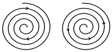

Беседа 3460 от 3877 · Беинса Дуно
Положителна мисъл
„Добрата молитва“
„Бог е Любов“
Говори се за свобода. Ако човек не може да мисли каквото иска, ако не може да чувствува каквото иска, и ако не може да работи каквото иска, свободен ли е? Не е. Най-първо, човек трябва да се освободи от всичките препятствия, които съществуват в неговия ум. Наслоени са. Задава се въпросът откъде са дошли. Откъде иде прахът в една стая? Стаята сама не привлича праха, но през дупките, оттук-оттам влиза и се наслоява. Някой път кирта се наслоява на ръцете. Ние не искаме, но очернени са ръцете, лицето е очернено. Всяка сутрин трябва да си миете ръцете, лицето.
Та, казвам: Първият начин е да имаме метод да разсъждава човек. Да разсъждава човек значи да знае да подбира нещата. За пример, някои хора не са досетливи. Кой е досетлив човек? Който предвижда нещата как ще станат. Някои хора нямат досетливост. Заради временни блага човек изгубва ценното. Някое дете е своенравно, стане наопаки, не става с главата си, не стане на краката си, но дигне задницата си, наведе главата надолу и започне да реве. Отиде майката, вземе го, нашари го и то дигне главата си. Всички вие сте констатирали тия работи.
Човек не може да учи, докато не е свободен. Вие седите и мислите. Някой бутне крака си, че го боли. Някой бутне ръката си, някой – ушите си. И десет пъти да бутнеш, тази работа с бутане не става. Някой път с бутане може да създадеш голямо препятствие. Казвате: „Остарях.“ Каква идея влагате в това? Вие влагате идеята, че сте отслабнали, че краката ви болят. Нямаме идея. Казват: „Едно време хората бяха такива, сега са станали други.“ Това е едно лъжливо понятие, което е влязло в ума ви. Когато влезе тъмнина в човешкия ум, какво казва? Той казва, че всичко е тъмно, няма никаква светлина. Вярно ли е това? Дотогава, докато е тъмнина, е вярно, но щом дойде светлината, всичко е светло. Кое е вярно сега? Какъв извод трябва да имаме? И двете са верни. Щом дойде светлината, има условие за знание. В светлината има условие за знание. Това е просто разбиране, никаква философия не туряйте. Дойде сега тъмната старост, казва: „Твоята работа се свърши.“ Дойде светлата страна на старостта, казва: „Сега започва животът.“ Старият човек ще се подмлади и човек и половина ще стане. Досега беше половин човек, а сега ще стане човек и половина. Вярно ли е туй? Казвате: „Умират хората.“ Защо умират?
Пишете тогава върху темата „Защо човек умира?“ Проучете този въпрос и цяла година трябва да мислите защо човек умира. Защо умират хората, защо ядат ябълки, круши. То е същият въпрос, все същият въпрос. Защо умира човек? Обикнал те някой, изял те, умрял си. Това е. Всеки човек, който умира, обикнали са го, изяли са го. Може да доказвате, че той умрял, че това е станало, онова е станало. И тебе, когато ти се яде една ябълка, влезе в стомаха ти. Може да казвате, че туй е станало, онова е станало. Нищо не е станало. Обикнали са се двама, ябълката се съблякла от старата дреха и като влязла в човека, се разтопила. И човек е весел, и ябълката е весела. Не е ли така? Така е.
Вие казвате: „Остарях вече.“ Поздравлявам ви. Като гледам образа на стария, седнали сме да се учим. Той казва: „Какво ще се учим, свърши се нашата работа.“ Право е, свършила се старата работа, нищо не си придобил. Седяла с години жената без да преде, сега ѝ дали хурка. Новата работа е жици да прави. Онази, която преде, пише. Тя се учи да пише единици. Първо мъжът е единица, напише една черта. Ту дебело преде, ту тънко преде. Да предеш, да събираш тия конци и да направиш дреха от тях, това е цяла наука, цяло изкуство. Казвате: „Кой не знае да преде?“ Ако на физическото поле предеш, не може в духовния свят да [не] предеш и в Божествения свят не може да [не] предеш. Тогава тази работа не върви. В трите свята трябва да предеш. Ако във физическия свят не знаеш да тъчеш, ако в духовния и в Божествения свят не знаеш да тъчеш, не върви тази работа. Ти на Земята си изучил как да предеш. Сега остава в духовния свят да предеш. Кое е сега духовното? Физическото е ходене на едно място, на едно място стоиш. При духовното има движение, ходиш и се движиш. Божественото кое е? Вие ще го намерите. Много прости работи са. Имате единица, 1, имате 2, 3, 4, 5. На физическото поле какво означават? Те са количествени числа. 2 е два пъти по-голямо от единицата, 3 е три пъти по-голямо от единицата, 4 е четири пъти по-голямо от единицата, 5 е пет пъти по-голямо от единицата, но това е количествено. В духовния свят числата имат друго значение. Една кибритена клечка е динамична, може да запали цял един град. Една кибритена клечка може да го запали и той да изгори и на хората може да им вземе 40–50 години да го съградят.
Та, казвам: По някой път вий внасяте някоя идея във вашия ум, без да знаете какви лоши последствия може да има. Някой път от някоя малка идея зависи вашето щастие. Някой път от някоя малка идея зависи вашето нещастие. Някой път минавате по пътя и виждате болен човек и си казвате: „Да не би като него да заболея.“ Ти забравиш и мислиш, че нищо не си направил. Минат се година, две, три, хване ви една болест. Тя се дължи на тази мисъл, която си поставил в ума си. Или някой път може да минеш покрай някой цигулар или художник или някой красив или добър човек, и ти кажеш: „Ще стана един ден като него.“ Забравиш това. Тази мисъл проработи в тебе и след години се роди една мощна сила.
Казвам: Бъдете внимателни, онова, което поставите във вашия ум, добро или зло, някаква лоша идея – кажи: „Не, Бог ме е направил да бъда здрав.“ Не оставяй мисълта: „Аз ще пропадна, аз ще се разваля, от мене нищо няма да стане, аз съм такъв и такъв.“ Не се произнасяй върху Божиите работи. Казваш: „Светът няма да се оправи.“ Брей, отде да знаеш, че светът няма да се оправи? Казваш, че светът няма да се оправи, че тази работа е непоправима. Казваш: „Туй не е оправено, онуй не е оправено.“ Ти не си пратен да си даваш мнението. Казваш: „Той е много лош човек.“ Ако е лош човек, той работи на нивата. Всички хора са лоши хора, които работят на нивата. Всички хора, които чупят камъните, са лоши хора. Всички учители, които учат хората, са лоши хора, ще ги хукат. Нещо относително е лошото. Лошото е в ш-то. Вземеш с три пръста – то е лошо. Вземеш някоя круша, ябълка, туриш я в джоба – то е лошото. В какво седи лошото? – Откъснал си този плод не навреме, той е зелен. Чакай да узрее плодът и тогава го късай. Щом го откъснеш зелен, ти вече създаваш една анормалност, една анархия създаваш.
Аз гледам сега между вас, от ред години казвате: „Едно време се въодушевявахме, пък сега… Какво беше едно време…“ „Едно време“ различава ли се от сегашното време? Едно време Слънцето не грееше както сега. Едно време звездите не грееха както сега. Едно време Месечината не грееше както сега. Сега вие искате да знаете какво ще бъде заключението. Никакво заключение няма. Не заключение, но разключение трябва. Вие всички правите заключение, казвате: „Тя няма да я бъде, той не знае, онзи не знае.“ Щом ти казваш, че този не знае, онзи не знае, подразбира се, че ти знаеш хубаво. Ти, който знаеш, започни да учиш хората. Казваш: „От нас нищо няма да стане.“ Има цял чувал с жито, казвате: „Нищо няма да стане.“ Какво ще прави семето на нивата? Един чувал го посей, той е достатъчен за цяла една година да имаш за ядене. Ти казваш: „За кого ще го сея?“ Сега посей онова, новото, хубавото в тебе, не оставяйте тия отрицателните мисли. Целият свят отрицателно мисли.
Казвате: „Какво ще стане сега?“ Ще стане туй, което всякога е ставало. „Какво ще стане?“ Слънцето ще изгрее, нивята ще изникнат, реките ще потекат, птичките ще пеят, хората ще ядат, младите моми ще се женят, майките ще раждат, бащите ще отглеждат децата си, проповедниците ще заповядват, учителите ще учат, работниците ще работят. „Какво ще стане? Ами после?“ После пак същото. „Ами след това какво ще стане?“ Пак същото. Ще се върти колелото. Сега някои искат да кажат после какво ще бъде. Какво разбирате под после? Аз бих желал какво иска после аз да му кажа. Казвам му: После ще станеш богат. – „Ами после?“ – Като станеш богат, после ще се ожениш. После ще намериш една жена, която ще те бие два пъти на ден. „После?“ – Ще родиш и деца и те ще те бият по три пъти на ден. – „После?“ – После ще те турят в чутурата и на прах ще станеш. „После?“ – Ще се разпръснеш във въздуха на прах, че от тебе ще се образуват дъждовните капки. После тия капки ще падат на земята и тревата ще изникне. После овцете ще я пасат, говедата ще я пасат. После вълците ще ги ядат. После хората ще ги бият, ще вземат кожите им. – „После?“ – После хиляди години да разправям, туй после няма да се свърши. Хиляди години не можем да ги съберем в една година. Сега казвате: „Тази година какво ще стане?“ За идущата година ще ме питате какъв ще бъде порядъкът. Вий ще искате да знаете защо е така. Има работи, които след 10 години ще ви кажа. После чакайте. Като дойде годината на после, тогава. В моя ум идеята за после е следната: като узрее житото, то е после вече. Значи придобил си, няма какво да се страхуваме. Като дойде после, вий се страхувате. Като съградиш къщата, туй после не съществува. Ще влезеш в къщата, ще живееш, ще излизаш, ще влизаш, много работи ще правиш.
Вие не можете да се освободите от вашите стари идеи. Седиш, погледнеш се в огледалото – не си тъй красив. Един художник, който рисува, че не знае да рисува, не е изучавал изкуството, не го прави от любов, но само от немай-къде, шари, шари, ще изучава стари автори как са рисували. Ще знаете как да употребите.
Ако вашето лице не можете да направите красиво, каква наука имате? Вижте младите колко са красиви. Красиви са младите. Господ, Който ви е обичал, вий сте вярвали в Него. Всяка сутрин сте мислили, идеал сте имали. Един ден вий намерите някое друго божество. Докато сте се кланяли на Господа, вий сте красиви, очите са красиви, веждите са красиви. Един ден вий намерите някое друго божество. Не ви стига един Господ, че още един Господ ви трябва. Погрозняването всякога иде от втория Господ. Момата, като се ожени, намери втория Господ. Момъкът, като се ожени, намери втория Господ. Децата като се народят, те са третият Господ. И те започнат да пишат. Дойдат слугите и започнат да шарят. Погледнеш един ден, набръчка се лицето ти, свил си се, вървиш като подплашен.
Оставете туй всичкото богатство. Тебе ти е останало да се жениш. Колко пъти ще се жениш? Веднъж си роден – оженен си. Каква женитба ще търсиш? Търсѝ другар. Някой дойде, иска да се жени. Казва: „Решил съм в живота да се женя.“ Няма какво да се жениш, кажи: „Аз искам само другар.“ Кажи: „В дългия път, който имам да вървя, с мен можеш ли да вървиш?“ Казвате: „Не може ли да се оженим?“ За женитба въпрос не може да става. Вий сте дошли женени в живота.
Казвате: „Аз съм женен.“ Минавам някъде, понеже разбирам много от езика на нещата, виждам, една мома се оженила, но като поглеждам, виждам, че тя си е намерила втори Господ. Казвам: Много зле си направила. Има да ти пати главата. Тя казва: „Защо не ме срещна по-рано да ми кажеш, ами сега? Защо не мълчиш и сега, но да страдам?“ Казвам: Мъжът ти след 5 години ще умре, Господ ще го прибере. Понеже Господ е ревнив, не иска ти да се жениш. Казва: „Ще плача заради него.“ Жената казва: „Кой ще ме гледа?“ Ще те гледа Този, Който всякога те е гледал. Ще те гледа Слънцето.
Казвам: Не си туряйте тия лъжливите заблуждения „кой ще ме гледа“. Тази идея да оживее във вас. Хората за вас да бъдат хора, чрез които Бог ви гледа. Гледате един човек – да знаете, че Господ ви гледа. Като срещнете когото и да е, гледайте слугува ли този човек на Господа както ти, или не. Ако слугува на Господа, другарувай, ако не слугува, стой настрана. Една овца и един вълк не може да се съберат, защото интересите им са различни. Не мислете, че можете да поправите един вълк, то е невъзможно. Вълкът ще си остане вълк. В Писанието се казва, че вълкът и овцата ще пасат заедно. То ще бъде, когато овцата приеме любовта и вълкът приеме любовта. Тогава ще стане. Един ден, когато вълкът ще живее по любов и овцата ще живее по любов, туй ще стане. Но докато [не приемете] любовта, ще съществуват вашите отношения, както днес съществуват.
Сега искам да останете свободни, разбирам: да забравите, че сте стари. Смешно е да мислите, че сте стари. Обиколили сте 40 пъти около Слънцето и при това не сте ходили с крака, но Земята ви е носила 40 пъти и сте я обиколили. И от гледане на тази обиколка сте остарели. Срамота е да мислите, че сте остарели. Тя ви е носила 40 пъти и вий, като сте обиколили 40 пъти, ще кажете: „В тия 40 обиколки аз се подмладих.“ Защото всяка обиколка около Слънцето е подмладяване. Вий, като обиколите 40 пъти около Слънцето, казвате: „Остарях.“ Който не е обикалял около Слънцето, той е остарял, а който е обикалял около Слънцето, не е остарял. 120 години като обикаляш, подмладявай се. 120 години като си обикалял, в небето си се прочул. Ще дойдат специално и ще кажат: „Ще благоволите ли да дойдете в нашия свят?“ Това е умиране. Тогава всички тия стари дрехи ще останат, с нови униформи ще влезете в другия свят. Като генерали ще тръгнете за оня свят. Онези, които не разбират, ще плачат подир вас. Вие ще пишете, че много добре са ви приели в оня свят, със знамена, с арки. Сега като ви говоря така, турците казват: „И да го видиш, не вярвай.“
Новата идея е като срещнете човека, да се зарадвате. Виждайте във всеки човек Божието благословение. Навсякъде, в тревите, в дърветата, в камъните, навсякъде виждайте Бога. Кажи: „Божиите блага, които се разнасят, с тях Бог е велик. Той ще засегне и мене.“ И ти си един от тия, които ще разнасят Божиите благословения навсякъде. (Учителят пее)
Аз остарях, но поумнях.
Стар вече няма да бъда
отсега нататък.
Тя не е лесна работа. Старостта в света е неорганизирана материя, която се намира в неговите стави, в нервите. Той среща съпротивление в пътя си, като вятъра. Духа вятър насреща ти, казваш: „Да престане, дотегна ми.“ Не трябва да допущаме тази материя да се наслоява.
Всяка сутрин, като станеш, ще [се] пречистиш. Молитвата е за пречистване на ума, начин за пречистване на сърцето и на тялото. Ще се пречистиш, това е работа. Ние някой път не разбираме и мислим, че молитвата е труд. Не, тя е най-хубавото нещо, което човек може да прави. Сутрин като станеш, да поговориш с Господа 1–2 часа. Вий колко говорите? Щом като станете, не отваряте радиото, казвате: „Работа имам“ и тръгваш по работата. Сега идеята стои туй как ще стане. Дебелите въжета как са станали? Раждат ли се дебелите въжета? – Не се раждат. Но най-първо имате един конец, после туряте втори, трети, четвърти, десетки хиляди и направите едно дебело въже. Че и в човешкия ум имате една мисъл, втора, трета и за да се образува една сила, трябва да дойдат много мисли в съвкупност и тогава имаме един резултат. Една мисъл, с един тънък конец, малко работа става. Все ще стане нещо, но с един конец не можеш да свършиш голяма работа.
Та, сега между вас трябва да се образуват групи. Като те боли кракът, да не вярваш, че те боли кракът. Как? Усещаш. Макар да усещаш болката, не вярвай. Имаме такива случаи. Срещна ви една година и ще ви дам 1000 лева. Срещна ви другата година, нямам, нищо не ви давам, но ви казвам: „След една година ще ви дам 1000 лева.“ Кое е по-хубаво: да ви кажа или да не ви кажа? Нещата, които не се казват, се сбъдват по-лесно, отколкото нещата, които се казват. Помисли, но не говори – по-лесно ще стане. Ти казваш: „Аз ще направя това.“ Кажеш, че ще го направиш. Ти нищо няма да направиш. Помисли и не оставяй друг да го направи. В света не си само ти, който работиш. Помисли, че когато тебе ти дойде някаква идея, има още хиляди същества, които мислят така и ти трябва да дойдеш в съгласие с тях. Нещата не стават, понеже ние искаме сами да свършим нещо. Искаш художник да бъдеш. Това не е единична идея. Ти, като художник, трябва да дойдеш в съгласие с всички художници, които от памтивека съществуват. Искаш да пееш, да станеш музикант – тя е колективна идея. Искаш да работиш за Бога – трябва да влезнеш в Божествената идея да работиш. Искаш сам да направиш нещо – нищо сам не можеш да направиш. Какво може да направи един тънък лист? Нищо не може да направи. Влез в Божествената идея. Ти като влезеш в един трен, нямаш право да го гледаш научно как е направен. Ти ще си седнеш на мястото, а огнярят и машинистът ще си гледат работата. Ти имаш предназначението да слезеш на някоя гара, туй тебе те интересува. Сега вие се интересувате какво ще стане. Хората са учени, знаят какво щяло да стане след милиони години. Аз да ви кажа: след милиони години много от това, което учените казват, я стане, я не. Казвам: Кажи ми днес какво ще стане. Казва: „Днес не зная какво ще стане, но за в бъдеще предсказвам.“ Днес какво ще стане? Аз да ви кажа какво ще стане. Непременно на обед ще идеш да се наядеш. Супа ще ядеш. Туй ви го предсказвам. Ще ме питате отгде го зная. Ще стане – нищо повече. Аз казвам: Зная, че повече от три яденета не може да поставиш.
Те са обикновени работи. Ний си губим времето. Сега седя тук и казвам: „Ние тук не живеем добре.“ Кой е този автор, който ти казал? Ти отгде го знаеш? Какво значи, че не живеем добре? Аз като съм болен, неразположен, мисля, че всичките хора са болни. Не е вярно. Моето неразположение не е неразположение на всичките хора. Отчасти може да им влияя и тяхното неразположение може да засегне мене отчасти. Някой път, когато един човек боледува, предава се болестта, но и здравословното състояние се предава. Та, някой път има закон, когато някой се разболее, и ти ще се разболееш. Трябва да знаеш. Като заболее някой, зарадвай се, че е заболял. Ти ще се зарадваш, когато някои хора заболеят, но и ти ще заболееш с тях наедно.
Искайте богатият да дава, но не искайте сиромахът да дава – няма какво да даде. Сиромахът, като го срещнеш, иска и той да работи заради тебе. Богатият като срещнеш, той може да ти даде. Той като ти даде, нищо няма да изгуби. И сиромахът, като работи за тебе, нищо няма да изгуби. Ако вие работите заради него, нищо няма да изгубите. И ако давате на богатия, нищо няма да изгубите. Който има малко, той продава. А ти имаш едно езеро вода – давай. Ако някой има само едно шише и той ви даде 100 грама, то не е даване. То нищо не ползува. От преизобилието, което имате, давайте. Всяко нещо, което не произтича от преизобилието, то не е даване. „Даром сте взели, даром давайте“, казва Писанието. Туй, което Бог ти дал, него давай; туй, което не ти дал, не давай. Казва: „Аз не давам.“ Прав си. Точка. Не ти е дадено – не може да дадеш. Дадено ти е – ще дадеш. Туй, което ти е дадено, ако не даваш, тогава ти повреждаш своята съдба.
Сега, да ви кажа какъв е законът. Ако ти приемеш храна в стомаха си и стомахът се обленява и казва: „Нека дойде втора храна, тогава ще започна работа“, този стомах ще пострада. Още като му дадат работа, трябва да започне. Стомах, който отлага за следната храна, скоро ще фалира. Сега ти дават една малка работа, ти отлагаш. Да дойде друга работа. Малката работа веднага свършѝ. Не отлагай нищо.
Аз ви говоря като на ученици. Аз ви говоря, пък вие казвате: „Чакай втори път какво ще каже Учителят.“ Туй, което сега ви казвам, вие си философствувате дали е вярно или не. Откъде ще знаете дали е вярно или не? Ако е за авторитет, аз зная дали е вярно или не. Много работи аз съм проверил. Аз съм ги правил. Аз ви говоря сега за един закон, с който всичките хора ще се борят. Сега вас ви утешават, сега сте остарели, но втори път като се преродите [на] Земята… Оставете тия заблуждения за втори път. Ти сега си прероден, не бъди сега глупак. Не ставай такъв глупав човек, да повикаш слугата си и да му дадеш имането си, че после от него да искаш, че той да ти каже: „Колко си ленив човек, че не работиш“, че не ти дава пари. Защо ще оставиш твоя слуга да се разправя с твоите пари? Всеки човек да се разправя с това, което има. Никога не се разправяйте с чужди работи. Кажете ми сега, какво [ви] липсва? Две неща. Да ги изправим. Няма да ми казвате: „Аз искам да свърша по музика.“ Музика никой не може да свърши. Казваш: „Искам да свърша музика, искам да уча музика.“ Нищо няма да свършиш. Какво ще свършиш? Идеята не е права. „Искам да свърша художество.“ Нищо няма да свършиш.
Ние, всичките хора, представляваме части на едно цяло. Ний съставяме една Божествена идея и трябва да знаеш какво е твоето предназначение в нея. Ти седиш и мислиш, че ти си господар. Не е така. Ти си господар на някои работи, но ти си част от едно цяло, ти имаш предназначение. Сега знаете ли какво е вашето предназначение? Не е лошо. Учете сега. Какво е вашето предназначение – трябва да учите хубаво. Какво значи да учите добре? Ти срещнеш един човек, искаш да знаеш дали те обича или не те обича. Като го срещнеш, запитай себе си: „Обичам ли го или не?“ Ти искаш много труден въпрос да разрешиш. Този въпрос е много труден, да знаеш. Аз в дадения случай може да зная обичам или не. Щом като срещнеш някого, когото обичаш, какво правиш? Аз като срещна някого, ни най-малко няма да го питам дали ме обича, но ще измеря ръката, ще измеря колко е обиколката на ръката. Някоя сестра или някой брат ще срещна с една млада мома – ще премеря ръката и ще зная обичат ли се или не. Нищо не може да се скрие. Зная каква промяна ще стане, ако се поусмихна само.
Всеки човек, който ви срещне, ще упражни микроскопическо влияние върху вас. Ти като срещнеш някого, непременно ще упражниш влияние. Казвате: „Аз не искам да влияя на хората.“ Ще ти влияят и ще влияеш – то е Божествен закон в света. Не съжалявай, но се радвай на онова влияние, което Бог упражнява чрез хората. Туй влияние иде само от едно място. Не очаквайте благото да дойде от тази лампа. Тази лампа като се запали, ток иде отдругаде. Очаквайте от Слънцето, от звездите, отвсякъде да дойдат тия блага. Тия Божии благословения идат постоянно. Тази идея дръжте в ума си.
Сега второто положение, ние как сме учили. Че когато Христос е говорил, вие не сте го чули, не сте го слушали какво е говорил. Слушате сега какво другите говорят. Не сте били там, когато е говорил на голямата проповед. Казвате: „Де бяхме ние? В Неговото време не бяха ли други хора? Защо не повярваха?“ Казва: „Не ми е дадено.“ Те са слушали и казали: „Туй е за бъдеще.“ Онези, които тогава Го слушаха, казаха: „Туй учение, което Той учи, е за бъдеще.“ То е заради вас, които сега слушате. Ти сееш жито тази година и идната година ще израсне. Туй жито не е за сега. То е за идната година. Хората за идната година ще ядат от класовете, които узреят. Те ще ядат от това жито.
Сега, не искам, като излезете, да кажете: „Виж какви хора сме били, не сме разбрали.“ Така не се говори. Най-първо, не влагайте в старостта немощ, не казвайте: „Остаряхме.“ На старите хора им липсва магнетизъм. Всички стари хора развиват личните си чувства. Те остаряват от своите лични чувства. Старите стават много амбициозни, мислят, че са остарели, че имат опитности, искат да ги уважават и да ги почитат. Тебе ще те уважават хората заради силата, която имаш. Тебе ще те уважават хората заради знанието, което имаш. Казваш: „Аз зная.“ Какво знаеш? Ще вземеш да нарисуваш една картина, ще вземеш да пееш, ще вземеш мотиката и ще работиш. Пък като стар какво ще правиш?
Вас, учениците, ще ви накарам по любов да работите. Вие още по любов не вършите работата. Аз имам насадени ягоди в лозето и искам всеки един от учениците по едно гнездо да изчисти. Тук до десетина дена да го направите. Всеки само по едно гнездо да изчисти [от] тревата и да го разкопае, не искам по десет гнезда. Едно гнездо ти ще разкопаеш, да не развалите работата.
Вие имате големи желания, казвате: „Аз съм учител.“ Какво от това? „Ще ходя да се занимавам с ягодите?!“ Мислите, че тази работа е проста. Аз отивам да видя какво Господ работи там. Господ е работил там. Като расте туй грозде, виждам какво слънце е работило върху него. От листата чета какви промени станали на Слънцето. Мълча. Има знания, които не ви казвам. Спирам се при някоя канара, спирам се при някой камък и виждам какво става във времето. Всяко нещо, което правя, аз проучавам. Божественото е вложено. Аз дигам едно камъче от едно място на друго. Мен ме интересува – като дигам камъчето, ще науча новото, което става в света, то е отбелязано там. Ако се приближа при едно камъче и пипна, че е топло, значи Слънцето го е гряло; ако е студено, значи Слънцето не го е гряло. Ако камъчето е топло, значи, че туй камъче е обичало повече Слънцето и Слънцето го е обичало повече; ако е студено, не го е обичало. Понеже не го е обичало, затова и другите камъчета са го затрупали.
Казвам: Ако вие не сте готови да се учите, ще ви затрупат. Ако сте готови, ще видите Слънцето. Ние сами се затрупваме. Казвате: „Това не е заради мене, онова не е заради мене.“ То е проста работа. Не за една пролет, две, три, четири, но има хиляди милиони години, като работите по този начин, много ще постигнете. Първия опит ви давам: всички, които обичате, да изчистите по едно гнездо. Като влезете вътре, ще си отправите ума, ще се спрете и едно гнездо от обич ще го очистите, не цяла леха. Дето обичаш, ще очистиш и ще си излезеш. Една задача за 10 дена и всеки от обич да го направи. Който не обича, да не работи. Аз вече ходих и очистих едно. Болят ме краката, понеже кляках. Очистих едно, но тази сутрин гледам: краката ме болят. Ще кажете: „Вече очистих, понеже краката ме болят.“ Ако не ви болят краката, нищо не сте очистили. Защо ме заболяха краката? Понеже сухите треви изхвърлих, те се разбунтуваха. Казват: „Какво право има, природата ни дава туй място, пък ни изхвърляте.“ Казвам: „Вас на служба ви назначавам.“ С всичките тревици се разправям. На някои семенцата, децата им на друго място.
Всякога в живота си вие ще срещнете едно противоречие. Противоречието всякога е Божие благословение. Вярвайте в това, не го обяснявайте. Бог използува в света всичките противоречия. Използува ги както Той разбира. Ако в нас има противоречия, има нещо, което и ние може да изправим. Всичките противоречия, които съществуват в ума, ще се превърнат за добро. Всичките противоречия, които съществуват [в сърцето], ще се превърнат за добро. Всичките противоречия, които съществуват в тялото, ще се превърнат на добро. То е Божия работа.
Та, казвам сега: Желая на старите от вас, които се мислите, да учите, толкоз години вие ме слушате, напишете сега какво сте разбрали. В 10 думи напишете какво сте разбрали. Ако аз ви дам един обяд, един обед нищо не ползува и два обяда нищо не ползуват. Ако ви говоря на един език, ще кажете, вие искате един обяд. Всеки един обяд е поемане на въздуха. Поемането на светлината не е ли един жив обяд? Някой път ние се събираме на обяд, но много от нашите обеди не са направени от любов, има недоволство. Всеки като седне, носи човешки разпоредби, на кое място да седне, философски работи, отляво или отдясно. В Божественото като седнеш, да имаш разположението на любовта, гдето и да си.
Някой път като седнете на масата, гледате към запад, някой път гледате на север, някой път на юг. Кое място искате сега? Ако гърбът ви е към изток, а лицето – към запад, какво ще придобиете? Значи, вие искате да слезете на Земята, да забогатеете, къща да имате. Много добре. Вий гледате към изток – вие искате да напуснете България, да идете в друга държава. Добре е. Ученик сте, искате да отидете другаде. Гледате към юг – искате добър да станете, много добър да станете. Идете в училището. Гледаш към север – искаш да научиш какво нещо е истината.
Север е нагоре, юг е надолу, запад е назад, изток е напред. И назад е потребно. Иде една мечка – няма да бягаш, ще отстъпиш. Тя ще мине, ще те погледне. Някой път трябва да козируваш на мечката. Погледне те като генерал. Аз ако съм, като срещна мечка, като иде, ще отстъпя назад, полека ще я поздравя, ще ѝ се поклоня. Аз в живота си можах веднъж да козирувам на една мечка. За пръв път бях ходил на Мусала, слизах през Маричината низина. Аз нося чадър и една кърпа с хляб. С мене върви един евангелски проповедник. Той си навехнал крака, малко накуцва и останал малко назад. Вървим по пътя и гледаме една мечка. Връщам се към проповедника и му показвам мечката. Аз таман щях да козирувам на мечката. Той помисли, че аз вече бягам, а тя иде наблизо. Като се удари в едно дърво, дигна си краката нагоре. Тя, като го видя, уплаши се и хукна обратно. За пръв път видях да бяга мечка, но от кон по-силно бяга. За пръв път съм срещнал мечка. Тя отдалече иде, заклатила си главата, отива към Марица.
Казвам: В мечките има нещо, което е хубаво. Човек не може да асимилира мисълта ѝ, има нещо много грубо, което тя внася и ти чувствуваш нещо грубо. Ако гледаш мечките, има нещо много хубаво. Наблюдавах тази мечка, като ме погледна, аз седя спокоен. Наблюдавах как очите ѝ се отвориха. Тя гледа и не може да разбере. Този проповедник си дигна краката. Мечката казва: „Този ли е, който проповядва на хората? Аз не искам да го виждам.“
Казвам: Всеки един от вас ще срещне такива препятствия. Можеше да се нахвърли тази мечка отгоре ни. Сега ви разправям, че тя е побягнала. Не беше женска, но мъжка мечка беше. Аз седях и гледах мечката и веднага ми дойде мисълта: ето едно същество затворено, прикрито. В тази мечка виждам кой е, зная кой е в мечката. Тя стъпя солидно, пък и в характера си има нещо такова. Като обича – обича, като мрази – мрази. Мечката много мрази. Ако я обидиш, и 20 години да мине, не забравя. Много отмъстителен характер има. Хора, които имат мечешки характер, са същите.
Та, казвам: Като срещнеш мечката, не може да мислиш, тя внася нещо. Или срещнеш някоя змия, някоя боа – не може да разсъждаваш. Трябва да имаш присъствие на духа. Животните винаги познават кой човек е страхлив. Щом твоите трептения са по-силни от техните, те бягат. Като те погледне, преценява моментално има ли противник или има един страхливец до себе си. Тези, големите мечки, тигри, вълци, змии, са много силни. Аз ви навождам това, защото мъчнотиите в живота мязат на разни животни. Една мъчнотия като те срещне, щом види, че си страхлив, тя те атакува. Няма какво да се плашиш от една мъчнотия. Писанието казва: „Потърсете Ме в ден скърбен и Аз ще ви помогна.“ При големите душевни мъчнотии ще опитаме Божията сила. Има неща, при които никой не може да ти помогне. Някъде си в пустинята, или в гората си изгубил пътя – кой ще ти помогне? Божественото начало вътре ще ти покаже по кой начин може да излезеш от мъчнотията.
Виждам ви, всички сте със затворени интервали. Има затворени интервали. Един затворен интервал трябва да се отвори. Имаш мъчнотия, която няма разрешение – то е затворен интервал. Щом намериш по кой начин може да стане тази работа, вече влизаш в отворен интервал. Ти започваш една идея и постепенно стесняваш, стесняваш – то е затворен интервал. Отвореният интервал е, когато започнеш от малкото и разширяваш. По кой начин ще работиш? Няма да започнеш от периферията, но от центъра навън ще излизаш. (фиг. 4.1)

Сега да остане идеята: „Аз остарявам, но ще се подмладявам.“ Затворени интервали има в някои песни. В българските песни са повечето затворени интервали. Сега ще ви изсвиря как българинът разбира. (Учителят свири тъжен български мотив.) Българинът казва: „Я бъде, я не.“ Той вярва, че някой ден някой ще се яви и ще отвори, но в далечното бъдеще. (Учителят свири нещо бодро, а после – много нежно.) Българинът казва: „Трябва да му се намери колаят, трябва да се излезе от трудното положение.“ (Учителят свири нещо живо, ритмично.) Той вече наближава отворения интервал. (Учителят пее)
Аз остарях,
но ще се подмладявам.
Това аз зная от моя дядо.
Иде време,
когато това ще стане в мои дни,
недалече от сега.
Аз ще се подмладя,
това да знаете всички вие.
Аз ще се подмладя,
да знаете всички вие това.
Аз ще се подмладя, аз ще се подмладя,
да знаете отсега.
Когато ще бъдем млади,
ще ходим, цветята ще изучаваме,
реките ще прегазваме,
по високи върхове ще се качваме,
на Бога слава ще отдаваме.
Аз ще се подмладя, аз ще се подмладя,
да знаете всички това,
що ви казвам сега.
Аз ще се подмладя,
да знаете вие сега.
Казвам: В Божествения свят има нещо хубаво, ново. Всякога човек трябва да бъде свободен. Трябва човек в себе си млад и щедър да се чувствува. В себе си да чувствувате резултатите. Вътре човек си е все млад, той съзнава, че е млад. Как е станал стар? Той постоянно си внушавал, внушавал. Казвам: Не си внушавайте, че сте стари. Всички мислете хубави неща. Кажете: „Ще се оправи тази работа, ще се подмладим.“ (Учителят пее)
Аз ще се подмладя,
да знаете отсега.
Като станете сутрин, ще пеете: „Аз ще се подмладя.“
Да оставим за втория път. Като излезете, пейте сега: „Аз ще се подмладя, да знаете вие това.“
Това е живот вечен, да позная Тебе, Единаго Истиннаго Бога и Христа, Когото си изпратил.
4-та лекция от XXI година
на Общия окултен клас (1941–1942),
държана от Учителя
на 22.Х.1941 г., сряда, 5 ч. сутринта,
София – Изгрев.